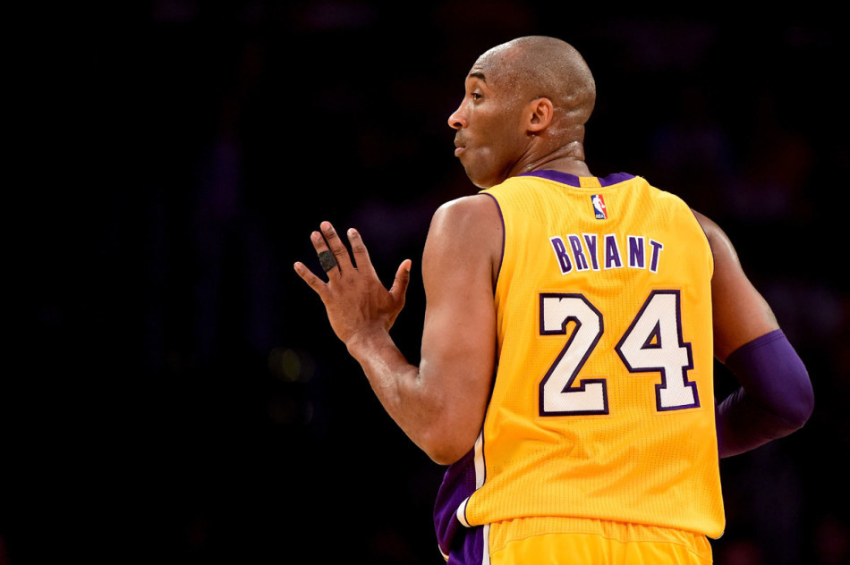

生於美國費城，已退役NBA職業籃球運動員，NBA歷史上最偉大球員之一，
綽號「小飛俠」、「黑曼巴 」（The Black Mamba）[1]、「老大」。
身高6英尺6英寸（198公分），體重212磅，主打位置為得分後衛。1996年首次在NBA出賽，
2016年球季結束後退役，在他為洛杉磯湖人效力的20年職業生涯中，
總得分達到33,643分，位居NBA歷史第三位，並取得5次總冠軍，
2次總決賽最有價值球員，1次年度最有價值球員，2次得分王。另外11次入選NBA最佳陣容，
18次入選全明星賽，以及2屆奧運會金牌。[2]。2018年，Kobe憑著動畫短片《親愛的籃球》獲得奧斯卡最佳動畫短片獎。
第1頁